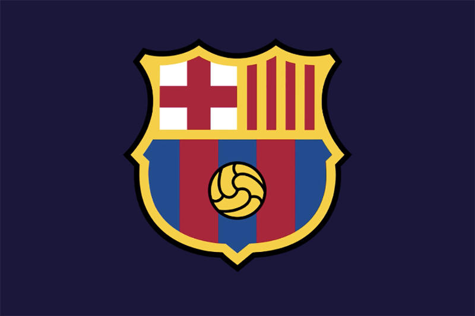

바르샤
스페인 라리가의 프로 축구 클럽. 연고지는 바르셀로나. 홈 구장은 캄 노우.
초대 라리가에서 우승한 이래 라이벌 레알 마드리드 CF에 이어 2번째로 많은 라리가 우승을 기록했고, 1928년 라리가 출범 이래 단 한 번도 강등되지 않고 스페인 최상위 리그에서 뛰고 있는 전통의 명문구단이다.
특히나 21세기에 들어서는 최초의 한 해 6관왕과 최초의 트레블 2회라는 대기록을 달성하였다.
약칭은 바르사(Barça). 그러나 한국에서는 흔히 '바르샤'라 부르는데 그 유래는 알 수 없다.
